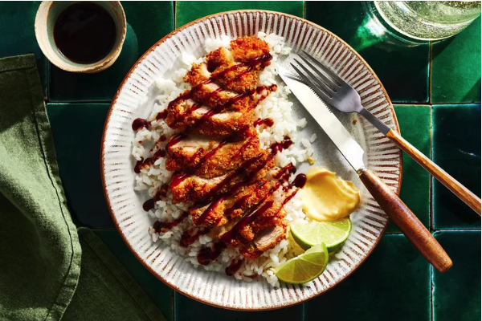

Home
Chicken Katsu Recipe

Perfectly golden, crisp breaded and fried chicken cutlets are an incredibly comforting dish. Serve the chicken katsu with tonkatsu sauce, Dijon mustard, and steamed sushi rice.
Ingredients
- 8 skinless, boneless chicken thighs (about 6 ounces each)
- Kosher salt
- 1 cup all-purpose flour
- 3 large eggs, lightly beaten with 3 tablespoons of water
- 3 cups panko breadcrumbs
- 3 cups vegetable oil, divided
- Tonkatsu sauce, for serving (see Note)
- Dijon mustard, for serving
- Steamed sushi rice, for serving
Steps
- Gather the ingredients.
- Lightly pound the chicken thighs 1/2 inch-thick and season with salt.
- Put the flour, eggs, and panko in three separate pie plates and season each one lightly with salt.
- Dredge 1 piece of chicken in the flour, tapping off the excess.
Dip in the egg, allowing the excess to drip off, then coat the chicken with the panko, pressing to help it adhere.
Transfer the chicken to a wax paper–lined baking sheet. Repeat with the remaining chicken.
- Divide the oil between two large skillets and heat until shimmering. Add the chicken and fry over moderately high heat, turning once, until golden and crispy, 3 minutes per side. Drain on paper towels.
- Serve the chicken with tonkatsu sauce, mustard, and steamed rice.